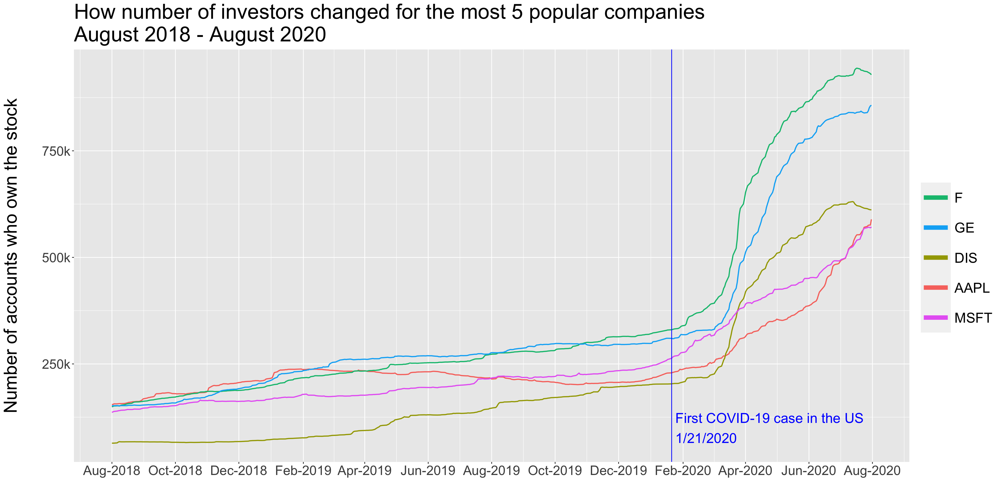
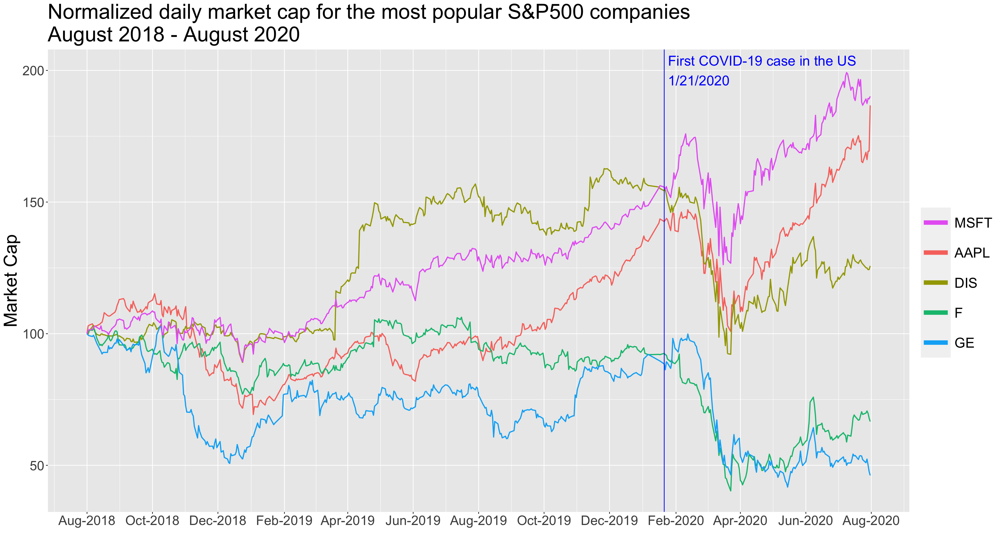

Chapter 5 Results
The main focus of our analysis will examine Robinhood’s users stock holding of the S&P500 companies between August 2018 - August 2020. We will explore how price, market cap, industry and founding year affect user’s holding.
5.1 Important terms
We quantify how popular a company is by how many Robinhood users hold its stock. We use “users”, “user holdings”, “accounts”, and “investors” interchangeably as a numeric measure of how many Robinhood investors own the stock. More specifically, as mentioned in the data transformation section, we measure a stock’s popularity by averaging the number of users holding across 2018-2020.
Moreover, we assign each company to a popularity group by using KMeans clustering(k=3) for the average number of user holdings over those 3 years. The three popularity categories are; not_popular(n=473), normal(n=16) and very_popular(n=5).
As expected, most of the companies in the S&P500 belong in the not_popular category and only 5 companies in the very_popular category.
5.2 Yearly average stock ownership by industry
First we explore the average user’s stock holding per industry for 2018, 2019 and 2020.
In order to explore the shifts in the most popular industries between 2018-2020, we have created a Cleveland plot for which we have sorted the y axis in descending order based on the yearly average users holding of 2020.
Some insights that we can extract from the above plot are:
We can see a jump in users holding for across all industries between 2018/2019 and 2020. A possible explanation is that retail trading has taken off in 2020 amid the coronavirus downturn that many young traders saw as an entry point into the world of investing.
This jump is especially evident in the following industries:
Communication Services,Consumer Discretionary,IndustrialsandEnergy.The largest jump in user holdings between 2019 and 2020 was in the
Consumer Discretionaryindustry. A possible explanation could be the increased interest of the Amazon (AMZN) stock during the pandemic.Even though
Information Technologyindustry had the second highest average user holdings in 2018 and 2019, in 2020 it dropped to 4th place.Similarly in 2018 & 2019
Energyindustry was less attractive thanConsumer Staples. However, in 2020Energyattracted more stock holders.Moreover,
Consumer StaplesandIndustrialsindustries have almost the same stock holding between 2018 and 2019. That trend was broken in 2020 whenIndustrialsalmost tripled in user’s holding compared toConsumer Staples.Another trend that we observe is that
Utilities,MaterialsandReal Estatehave similar average user holdings between 2018 and 2019. On the other hand the rest of the industries have experienced an increase in user holdings between these two years.
5.3 A closer look at the companies
After exploring the trends in user holdings by industry, we dig deeper to see if there are any patterns at the individual company level.
We had originally plotted the average user holdings for all of the companies in a Cleveland dot plot but found that it would result in a multi-page plot given the number of companies. While we did not include the plot for formatting purpose, it was visually evident that there were only few companies that drew the investors’ attention and had high number of accounts who owned the stock whereas the vast majority of the companies had very little interest from the account owners. This further validated the need to divide the companies as we mentioned earlier into three categories: very popular, normal, and not popular. In the subsequent data exploration, we focus our attention on the “very popular” category given there are much greater investor attention on these companies.
We first take a look at companies within the most popular category.
## [1] "F" "GE" "AAPL" "MSFT" "DIS"The top five most popular (by average number of account owners) companies are F (Ford Motors Vehicle), GE (General Electric Company), AAPL (Apple), MSFT (Microsoft), and DIS (Disney). Unsurprisingly these are well-established companies that most households know. This is consistent with intuition that the most investors using the Robinhood app are retail investors so would invest in stable, well-known companies.
## [1] "AMD" "FB" "BAC" "AMZN" "TWTR" "NFLX" "AAL" "DAL" "NVDA" "SBUX"
## [11] "T" "CCL" "BA" "KO" "MU" "NCLH"In the second tier of “normal”(ly) popular companies are AMD (Advanced Micro Devices), FB (Facebook), BAC (Bank of America), AMZN (Amazon), TWTR (Twitter), NFLX (Netflix), AAL (American Airline), DAL (Delta Airline), DAL (Nvidia), SBUX (Starbucks), T (AT&T), Carnival (CCL), Boeing (BA), Coca-Cola (KO), Micron Technology (MU), and Norwegian Cruise Line (NCLH).
Most of these companies are also well-established companies. There are additional intuition supporting relatively higher account ownership behind these stocks. Many of these companies were heavily impacted by the pandemic and received intense investor attention in the post-COVID financial market. Travel-related companies such as American Airline, Delta Airline, and Boeing as well as leisure-related companies including Carnival and Norwegian Cruise line had businesses that were negatively impacted by the restriction imposed during the pandemic. This led to their stock prices to plummet considerably. Retail investors perhaps saw this as an opportunity to “buy the dip” and increase account ownership for these companies.
Another trend we see is the prevalence of tech companies that are positively impacted by the work-from-home dynamic in the post-COVID world. Companies such as Advanced Micro Devices and Nvidia produce computing chips and systems for mobile computing.
As we shall see later in our data exploration, Robinhood saw a significant increase in new accounts and investing activity post March 2020, further supporting the intuition that companies that were heavily impacted by the pandemic would see heightened attention.
5.4 Ownership of the very_popular companies
To better understand the distribution shape of the number of accounts who own the individual stock, we first looked at the histogram of the top 5 companies’ investor ownership distribution.
Looking at the number of accounts who owned the top 5 most popular companies, we can see that they are all right skewed distributions. There is one peak with high frequency for <= 250k account owners. For companies like Disney, Ford, and General Electric there is a second peak near the highest number of accounts (750k-1mm) but that peak is much smaller the first at the lower end. This makes intuitive sense as the second peak of high number of accounts would result in an elevated number of investors putting in on the most popular list. The more popular companies (such as F and GE) tend to have wider min-to-max ranges than the less popular ones.
Next, we use boxplots to show the distribution of number of accounts who owned the individual stocks within the most popular category. The circle denotes the mean for comparison with the quartiles.
Looking at the boxplots:
It is evident that there are considerably number of outliers across all 5 companies. Almost all of the outliers are skewed toward the high end which would increase the average number of user holdings across the time period.
General Electric and Ford are the most popular among the top 5 companies. However, General Electric has a smaller spread than Ford.
With the exception of Microsoft, the mean across the remaining 4 companies seems to be near or above the upper hinge.
Apple stands out with a much smaller H-spread compared to the other companies suggesting that the number of accounts who owned Apple is concentrated around just below the 250k mark. Within the H-spread, the length to the lower hinge and upper hinge look to be relatively symmetric.
Next we used time series line graphs of price, Market Capitalization and VIX to introduce time as a new perspective to users holding.

By looking at the daily number of investors for a particular stock over time, we can easily see a significant increase around the March-April 2020 time frame. Visually we can see that all of the outliers at significantly large number of investors are during the later end of the available dataset near summer 2020. This is consistent with what we observed in the boxplot and histogram where for the majority of time period (from Aug 2018 to March 2020), the daily number of account owners was relatively stable within a tight range.
Next, we plot the stock prices of the top 5 most popular companies to see if there’s any relationship between the stock price and number of investor. We look at both the actual stock price and the normalized stock price.

Some observations from the above plot:
There is a major drop in stock prices for all
very_popularcompanies in March 2020. These prices dropped almost two weeks after the first COVID case in the US.Prices recovered from their drop during end of March 2020 and began rising. This increasing trend is in sync with the increasing number of Robinhood users holding these stocks.
Price is negatively correlated with the popularity of a stock. For example, Ford and General Electric have the lowest stock prices among the
very_popularand they have the highest user’s holding. This aligns with our intuition that the low price makes these two stocks an attractive investment for Robinhood’s users. On the other hand, Microsoft in August 2020 was the most expensive stock to buy and had the lowest amount of users holding it.All
very_popularcompanie’s stock price was dropping during March 2020. After March 2020 stock prices increased. For Microsoft and Apple, stock prices rose so sharply until August 2020 that they were almost double of what they were in August 2018. This rise in price also follows the trend of the increase in numbers of users investing in these companies.Interestingly enough, even though Disney in August 2020 had more user’s holding it’s stock than Apple and Microsoft, it didn’t pick up the sharp increase in price. August 2020 and August 2018 prices are not that different.
From August 2018 to November 2020, Disney’s and Microsoft’s stock price was following similar patterns. However, from November 2020 onward, Microsoft had an increase in price and Disney a drop in price. In August 2020 Microsoft’s stock price was almost twice as much as Disney’s.
Disney at the end of April 2019 announced plans to launch its own streaming video platform. We can therefore see users increased interst in Disney stock through an increase both in popularity and price. This trend ended due to the pandemic.
In order to be able to better compare the stock prices among those companies, we standardized all prices to be 100 in August 2018. Our goal is to see their relative increases and decreases till August 2020.
This plot makes it is easier to compare how these companies stock price changed through August 2018 - August 2020.
General Electric had some price drops during November 2018- February 2019 as well as August 2019 and October 2019. It recovered from those price drops until COVID. It didn’t recover the stock price compared to the other
very_popularcompanies.Ford’s price was steady throughout 2018-2019 until March 2019. After than price drop, it didn’t manage to recover fully.
Apple’s stock price wasn’t as high as Disney’s and Microsoft’s from December 2018 to October 2019. However, it steadily rose since June 2019 and surpassed Disney’s price in October 2019.
It is evident from this graph that both Apple and Microsoft have exhibited similar increasing price patterns during August 2018 - August 2020.
We also looked at the market capitalization of these 5 companies. The market capitalization measures the size of the company’s outstanding equity value. It is calculated by stock price multiplied by the number of shares outstanding.

Since stock price level is an input in the market capitalization, it is unsurprising that the daily market cap of the companies follow a similar shape to the stock price. In this graph, Apple has a higher market cap than Microsoft despite Microsoft having a higher stock price. This trend is not statistically meaningful because Microsoft simply has lower number of shares outstanding.
From the graphs, we can see that across all 5 companies, the stock price took a hit in March 2020 coinciding with the onset of the pandemic in the US. After the initial drop in price, the stock prices slowly increased back up. It is not consistent whether the stock prices increased back to the pre-pandemic level. One theory for this behavior is that investors using Robinhood took the opportunity to buy stocks when the price was low. Since these 5 companies are well established companies that are unlikely to be negatively impacted by the pandemic, investors increased their ownership of these stocks. They continued to buy these stocks as the stock prices continue to rise as a positive feedback loop to the positive returns on their investments.
Lastly, we looked at the VIX index which measure the market-implied pricing for markets volatility. It is an industry standard metric that indicates investor’s expectation for uncertainty with a higher number corresponding to higher volatility.

We see that the VIX spiked significantly during the March-April 2020 time frame corresponding to when we saw a drop in stock price. Since the VIX is an indicator across the broader S&P500 index, it suggests that the outsized stock price movement was not limited to just the top 5 companies that we looked at.
It further validates our original intuition that there is a trend of Robinhood investors taking advantage of the market uncertainty in March/April 2020 to buy certain well-established companies. By buying in well known companies with limited adverse impact from COVID-19, the investors can invest their money in a relatively safe stock that preserve capital and buy at a lower price with the hope that the stock returns back to previous levels. The continuation of higher account owners may be both attributed to higher overall accounts on Robinhood as well as positive feedback from subsequent stock performance.
5.5 Ownership vs Founding Year
As mentioned in the transformation section, we have also split the companies in three founding dates ranges. We again used KMeans clustering(k=3) in order to group the S&P500 companies in three age groups for which we recorded the minimum and maximum founding rate in each group as their label. More specifically the three founding ranges are;1784-1892(n=247),1894-1952(n=400), 1954-2019(n=798).

Key takeaways from the above plot:
When comparing the old and the medium founding range companies (
1784-1892and1894-1952) there seems to be a positive correlation with popularity. Companies that were founded in1894-1952are more likely to belong to thenormaland thevery_popularcategories compared to companies founded in1784-1892.However, this positive correlation trend is broken when we look at the most recently founded companies. This group has the most
normalpopularity companies across all founding range groups.Companies that were most recently founded have the least count in the
very_popularcategory. We would have been able to identify a positive correlation between how recently a company was founded and how popular the company is among Robinhood users. However this trend is broken in the1954-2019companies.Most of the companies are in the
not_popularcategory. It seems that for this category it doesn’t really matter when the company was founded.
A possible explanation of the partial positive correlation between founding year and popularity could due to the fact that older companies have been around for longer and thus people know of them.